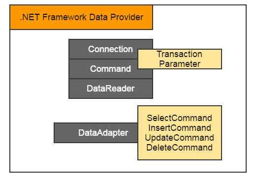
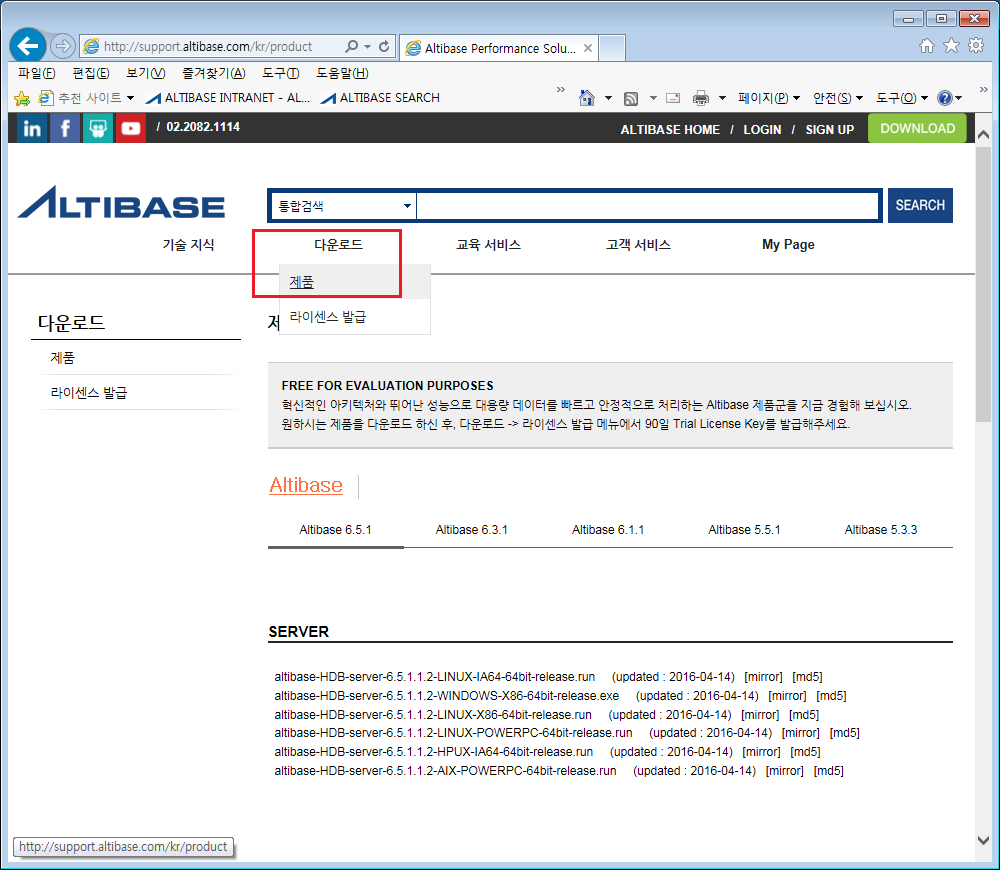
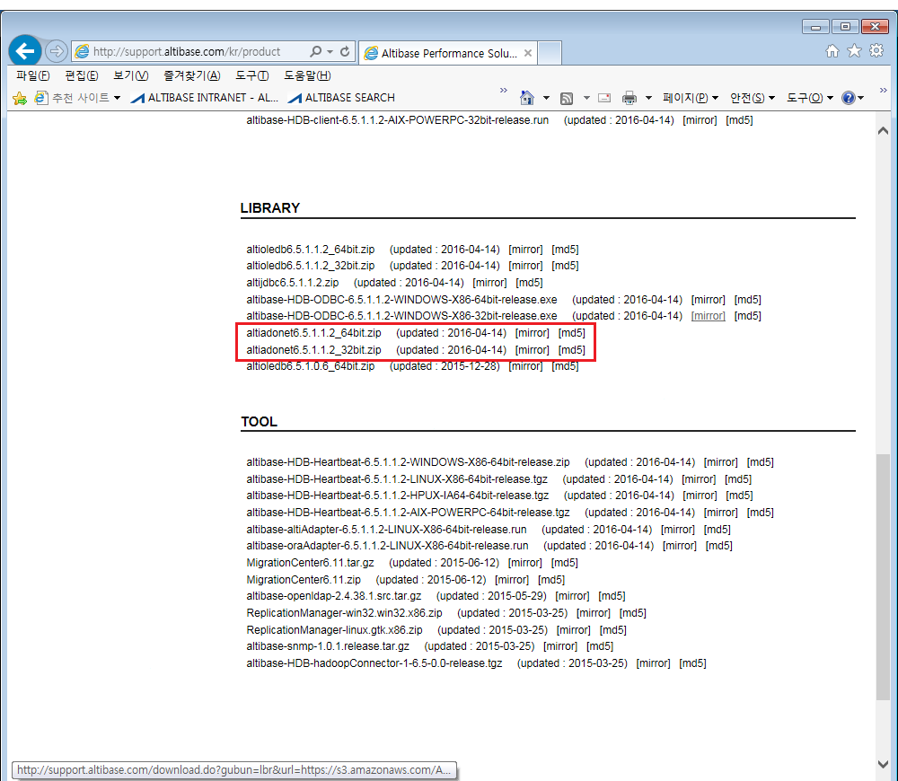
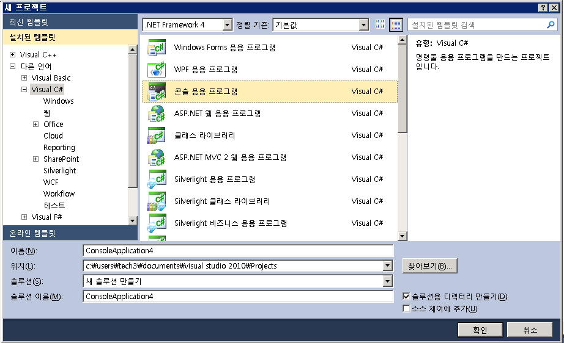
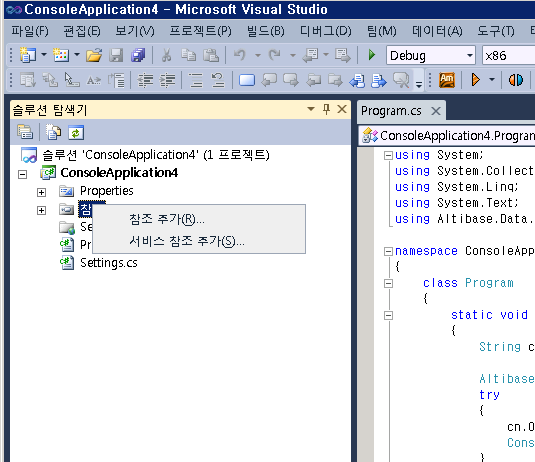
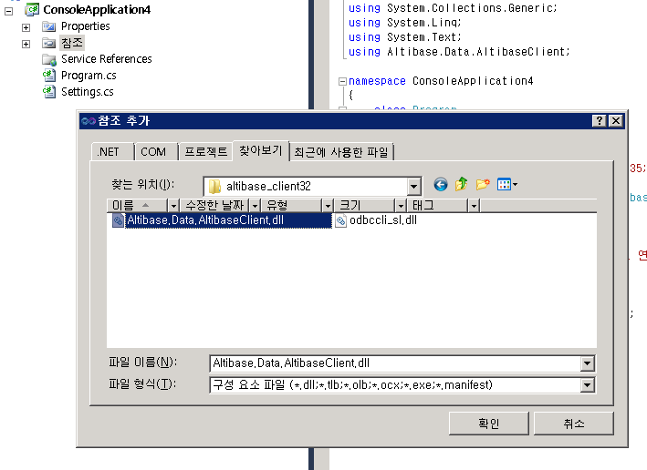
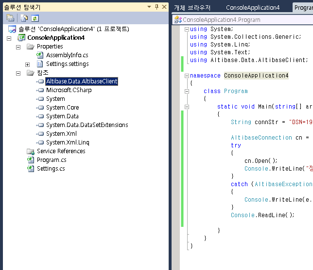
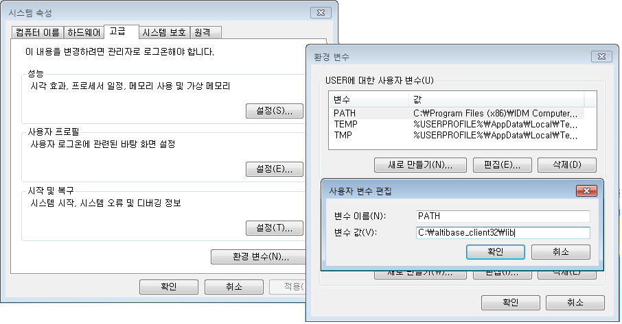
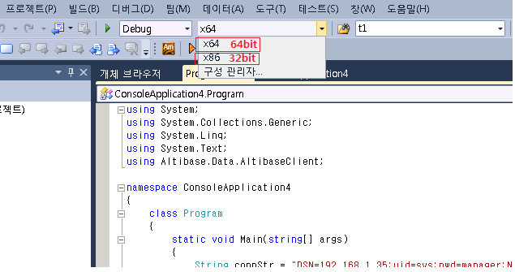

본문서는 WINDOWS ADO.NET 환경의 ALTIBASE 응용 프로그램 개발을 위한 Altibase.Data.AltibaseClient.dll을 다운로드 받고 설치하는 방법에 관해서 설명한다. ADO.NET 에 관한 더 자세한 내용은 "Application program Interface User's Manual" 을 참고한다.
ADO.NET
ADO.NET은 OLEDB, ODBC를 통해 연결되는 데이터소스뿐 아니라 XML과 같은 데이터소스에 대한 일관성 있는 접근을 제공하기 위해 고안된 방법을 의미한다. ADO.NET의 구성요소는 크게 .NET Framework Data Provider와 DataSet으로 나눌수 있으며 ALTIBASE는 이중 .NET Frmaework Data Provider와 관련된 것을 제공하는 것이라 보면 된다.
구성요소 | 설명 |
|---|---|
.NET Framework Data Provider | 데이터의 조작 및 고속 데이터 접근을 위해 디자인된 구성요소 |
DataSet | 데이터소스에 상관없이 데이터에 접근할 수 있게 디자인된 구성요소 |
.NET Framework Data Provider의 세부적인 구성요소는 아래와 같다

클래스 | 설명 |
|---|---|
Connection | 데이터소스에 대한 연결을 제공하는 역할 |
Command | 연결된 DB에 질의를 수행하는 역할 |
DataReader | 연결된 DB에서 레코드를 읽어들이는 역할 |
DataAdapter | DataSet객체에 데이터를 채우는 역할 |
뒤에 소개 할 소스 예제에서는 ALTIBASE에서 제공하는 Connection, Command, DataReader, DataAdapter등에 대한 간략한 사용 예를 설명하고 있다.
요구사항
Altibase ADO.NET provider 를 사용하기 위해서 필요한 환경은 아래와 같다.
- .NET Framework
알티베이스 HDB 패키지에 포함된 .NET Data Provider는 .NET Framework 2.0 이상, Entity FrameWork는 .NET Framework 3.5 SP1이상에서 사용하기를 권장한다. - ADO.NET 버전에 따라서 다른 .NET Data Provider
ADO.NET 버전에 따라서 다른 라이브러리 파일을 제공하므로, 사용하려는 ADO.NET 버전에 적합한 라이브러리를 사용해야 한다 - Altibase CLI 라이브러리
ALTIBASE HDB .NET Data Provider는 Altibase CLI 라이브러리를 이용하여 데이타베이스 서버에 접속하므로 Altibase CLI 라이브러리를 설치해야 한다. 알티베이스 HDB (서버 또는 클라이언트) 패키지에 기본으로 제공된다. - DTC 시스템 서비스
분산 트랜잭션을 수행하기 위해서는 DTC 시스템 서비스가 설치되어 있어야 한다. 또한 ALTIBASE HDB .NET Data Provider는 XA 트랜잭션과 연동시켜 분산 트랜잭션을 수행하기 때문에 DTC 설정시 'XA 트랜잭션 사용' 옵션을 반드시 활성화시켜야 한다.
ADO.NET DLL 다운로드
http://support.altibase.com에 접속하여 "다운로드" --> "제품" 부분으로 이동한후 LIBRARY Section 에서 altiadonetX.X.X_32/64bit.zip 파일을 받은 후 압축을 풀면 ADO.NET DLL 이 들이있다. 만일, 서버패키지와 동일한 버전을 얻고자 할 경우는 “CLIENT” Section 부분에서 동일한 버전을 사용하면 된다.
(웹 사이트에 없는 이전 버전인 경우 http://support.altibase.com 의 QnA 게시판으로 문의하도록 한다.)
|  |  |
|---|
( 본 문서의 작성 시점에는 altiadonet6.5.1.2_64/32.zip 파일이 최신으로 업로드 되어 있다 )
ADO.NET DLL 설치
처음 설치할 경우라면 WINDOWS CLIENT패키지를 다운로드 받아 설치하도록 한다. 설치파일에서는 별도의 복잡한 진행과정이 없어 본 문서에서는 별도로 설명하지 않는다. 일반적으로 패키지를 설치했거나 또는, 압축파일 해제 후 "Altibase.Data.AltibaseClient.dll" 과 "odbccli_sl.dll" 이라는 파일을 확인할 수 있다. (설치 시 %ALTIBASE_HOME%/lib 에 위치)
ADO.NET 응용프로그램 컴파일 하기
Visual Studio IDE환경에서 Altibase ADO.NET Data Provider 를 사용하여 어플리케이션을 컴파일하는 과정을 설명한다.
1. 새프로젝트를 연다.
파일->새로만들기->프로젝트 메뉴를 열어서 아래와 같이 새프로젝트를 생성한다.

2. 참조 추가하기를 통해서 Altibase ADO.NET Data Provider를 등록한다.
아래와 같이 좌측 프로젝트 탐색기 트리에서 "References(참조)" 에서 마우스 오른쪽을 클릭해서 참조 추가를 통해서 "Altibase.Data.AltibaseClient.dll" 을 추가한다.
| 1) 참조에서 마우스 오른쪽 버튼 클릭해서 "참조 추가" 클릭 | 2) 대화창에서 Altibase.Data.AltibaseClient.dll 경로로 이동해서 설정완료함 |
|---|---|
|  |  |
참조 추가가 완료되면 아래와 같이 솔루션탐색기의 참조 트리에 "Altibase.Data.AltibaseClient" Altibase ADO.NET provider가 추가된다.

3. odbccli_sl.dll은 동적라이브러리 경로에 포함되도록 한다.
ALTIBASE의 ADO.NET 라이브러리는 반드시 odbccli_sl.dll파일을 필요로 한다. 따라서 odbccli_sl.dll 을 참조할 수 있는 경로에 위치시켜야 한다. odbccli_sl.dll 을 참조할 수 있도록 하는 방법에는 아래의 2가지 방식이 있다.
3.1 실행파일이 위치한 폴더에 배치하는 방법
odbccli_sl.dll 을 실행파일이 위치한 폴더와 동일에 폴더에 배치하면 실행파일의 현재 경로에서 참조한다.
3.2 환경변수 PATH에 odbccli_sl.dll 라이브러리가 위치한 경로를 추가하는 방법
환경변수 PATH 에 odbccli_sl.dll 이 위치한 경로를 추가하는 방식이다. odbccli_sl.dll 이 C:\altibase_client32\lib 에 있을 경우 아래와 같이 PATH에 추가한다. Visual Studio 를 재실행해야 변경된 PATH 환경변수 내용을 Visual Studio 가 인식할 수 있다.

주의점
Visual Studio 의 컴파일 Bit 타입에 맞는 라이브러리를 사용해야 한다
Visual Studio는 옵션을 통해서 어플리케이션의 컴파일 비트를 64bit 또는 32bit로 선택할 수 있다.

준비 완료
위와 같이 두 파일의 설치가 끝나면 ADO.NET provider를 사용하기 위한 환경준비가 완료된다.
{kind=link}
{kind=link}
{kind=link}
{kind=link}
{kind=link}
{kind=link}
{kind=link}
{kind=link}
{kind=link}
{kind=link}
{kind=link}